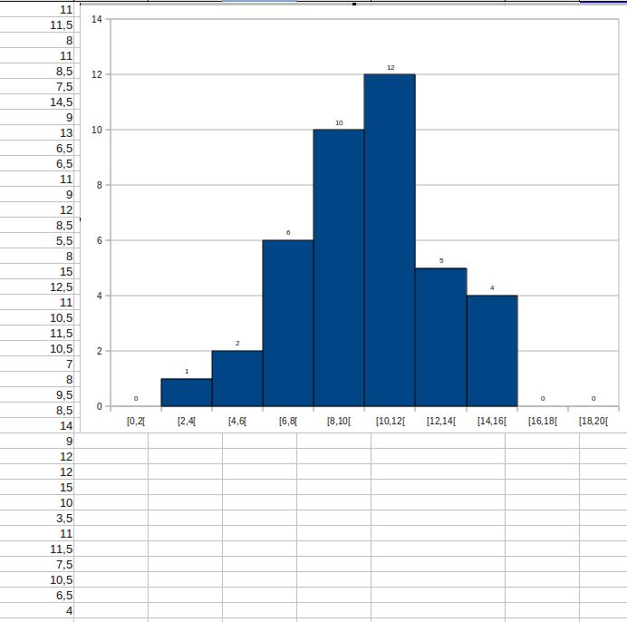
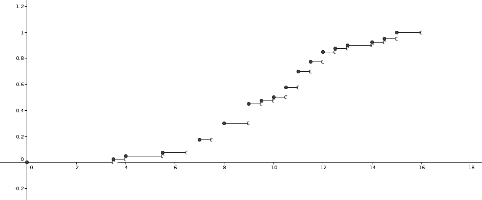

| Choisissez votre langue ! | Choose your language ! |
Définitions
Definitions
définition 1
Soit P une population, X un caractère numérique et I un intervalle de ℝ. La
'classe'
de I pour X est l'ensemble des individus de la population dont la modalité pour X appartient à l'intervalle I.
definition 1
Let P be a population, X a quantitative variable and I an interval of ℝ. The
'class'
of I for X is the set of individuals in the population whose value for X belongs to the interval I.
NB : Souvent (mais pas toujours) l'intervalle I est de la forme [a,b[ (fermé à gauche et ouvert à droite).
Une classe, correspond donc en langage ensembliste à une .
De la même façon que pour une modalité isolée on peut définir l'effectif et la fréquence d'une classe :
Une classe, correspond donc en langage ensembliste à une .
De la même façon que pour une modalité isolée on peut définir l'effectif et la fréquence d'une classe :
NB: Often (but not always) the interval I is of the form [a,b[ (closed on the left and open on the right).
A class therefore corresponds in set theoretic language to a .
In the same way as for an value-point, the tally and frequency of a class can be defined:
A class therefore corresponds in set theoretic language to a .
In the same way as for an value-point, the tally and frequency of a class can be defined:
définition 2
"L'effectif"
de la classe C correspondant à l'intervalle I, est tout simplement le nombre d'individus qui la compose.
definition 2
The
"tally"
of the class C corresponding to the interval I, is simply the number of individuals that it includes.
définition 3
La
'fréquence'
d'une classe est le quotient de son effectif par l'effectif total de la population.
definition 3
The
'frequency'
of a class is the quotient of its tally by the total size of the population.
définition 4
"L'amplitude"
(ou étendue) de la classe correspondant à l'intervalle I=[a,b[ est le nombre b-a.
definition 4
The "amplitude"
(or range) of the class corresponding to the interval I=[a,b[ is the number b-a.
définition 5
Le
'centre'
de la classe correspondant à l'intervalle [a,b[ est le nombre (a+b)/2 (milieu de l'intervalle).
definition 5
The
'center'
of the class corresponding to the interval [a,b[ is the number (a+b)/2 (middle point of the interval).
Dans la série [9, 40, 37, 9, 30, 21, 19, 24, 11, 36, 22, 11, 34, 0, 14, 40, 22, 2, 18, 20, 8, 0, 36, 26, 37, 23, 11, 16, 40, 7]
Dans une telle représentation, chaque classe est représentée par un rectangle, la surface de chaque rectangle est en proportion avec l'effectif de la classe qu'il représente. Supposons donc que nous avons une classe de 40 élèves et soit la série statistique obtenue à partir de leurs notes de mathématiques.
Voici un histogramme correspond à des classes d'amplitude 2.
- l'effectif de la classe [15,25[ est 9
- la fréquence de cette classe est 9/30, soit 30%
- l'amplitude (ou étendue) est 10
- le centre est 20
Histogrammes
Pour obtenir une vue synthétique d'une série statistique il est bon de la représenter par un diagramme particulier appeler 'histogramme' et correspondant à un découpage de la population en un ensemble de classes recouvrant la population totale.Dans une telle représentation, chaque classe est représentée par un rectangle, la surface de chaque rectangle est en proportion avec l'effectif de la classe qu'il représente. Supposons donc que nous avons une classe de 40 élèves et soit la série statistique obtenue à partir de leurs notes de mathématiques.
Voici un histogramme correspond à des classes d'amplitude 2.
In the series [9, 40, 37, 9, 30, 21, 19, 24, 11, 36, 22, 11, 34, 0, 14, 40, 22, 2, 18, 20, 8, 0, 36, 26, 37 , 23, 11, 16, 40, 7]
In such a representation, each class is represented by a rectangle, the area of each rectangle is in proportion to the size of the class it represents. So suppose we have a class of 40 students and be the statistical series obtained from their math scores.
Here is a histogram corresponds to classes of amplitude 2.
- the tally of class [15,25[ is 9
- the frequency of this class is 9/30, or 30%
- amplitude (or range) is 10
- center is 20
Histograms
To obtain a synthetic view of a statistical series, it is good to represent it by a particular diagram called 'histogram' and corresponding to a division of the population into a set of classes covering the total population.In such a representation, each class is represented by a rectangle, the area of each rectangle is in proportion to the size of the class it represents. So suppose we have a class of 40 students and be the statistical series obtained from their math scores.
Here is a histogram corresponds to classes of amplitude 2.

Effectifs cumulés
Cumulative totals
définition 6
"L'effectif cumulé croissant"
de la classe [a,b[ est l'effectif de la classe ]-∞,b[. "L'effectif cumulé décroissant" de la classe [a,b[ est l'effectif de la classe [b , +∞[.
definition 6
The
"increasing cumulative total"
of class [a,b[ is the tally of the class ]-∞,b[. The "decreasing cumulative total" of class [a,b[ is the tally of the class [b,+∞[.
On a des définitions analogues pour les fréquences cumulées.
Reprenons l'exemple ci-dessus
Reprenons l'exemple ci-dessus
The same definitions hold for cumulative frequencies. Let's take back the example above.
|
classe
class
|
effectif
tally
|
effectif cumulé croissant
increasing cumulative total
|
fréquence cumulée croissante
increasing cumulative frequency
|
| [0,2[ |
0 |
0 |
0 soit
or 0% |
| [2,4[ |
1 |
1 |
1/40=0.025 soit
or 2.5% |
| [4,6[ |
2 |
3 |
3/40=0.075 soit
or 7.5% |
| [6,8[ |
6 |
9 |
9/40=0.225 soit
or 22.5% |
| [8,10[ |
10 |
19 |
19/40=0.475 soit
or 47.5% |
| [10,12[ |
12 |
31 |
31/40=0.775 soit
or 77.5% |
| [12,14[ |
5 |
36 |
36/40=0.9 soit
or 90% |
| [14,16[ |
4 |
40 |
1 soit
or 100% |
| [16,18[ |
0 |
40 |
1 soit
or 100% |
| [18,20] |
0 |
40 |
1 soit
or 100% |
Fonction de répartition
Cumulative distribution function
définition 7
C'est la fonction définie par : F(x)=fréquence(]-∞,x])
definition 7
This is the function defined by: F(x)=frequency(]-∞,x])
propriété 1
La fréquence de la classe ]a,b] s'obtient donc par la formule F(b)-F(a)
property 1
The frequency of class ]a,b] is therefore obtained by the formula F(b)-F(a)
propriété 2
La fonction de répartition est : - constante par morceaux
property 2
The cumulative distribution function is : - constant by pieces
Illustration correspondant à l'exemple ci-dessus :
Illustration corresponding to the example above:

Le coin de Python
Voici un programme qui génère une série statistique et qui calcule l'effectif d'une classe :Python's Corner
Here is a program that generates data and calculates the size of a class:
Calcul d'une fonction de répartition (on a repris l'exemple du tableur) :
Computation of a cumulative distribution function. We took again the example of the spreadsheet.
Le coin de Julia
Et voici l'équivalent avec Julia 1.6 :
Julia's corner
And here is the equivalent with Julia 1.6:
|
Création Gilles Dubois - licence CC-BY-SA
Created by Gilles Dubois - licence CC-BY-SA
|
Septembre 2023
September 2023
|
Version mobile Jquery
Mobile Jquery version
|
|